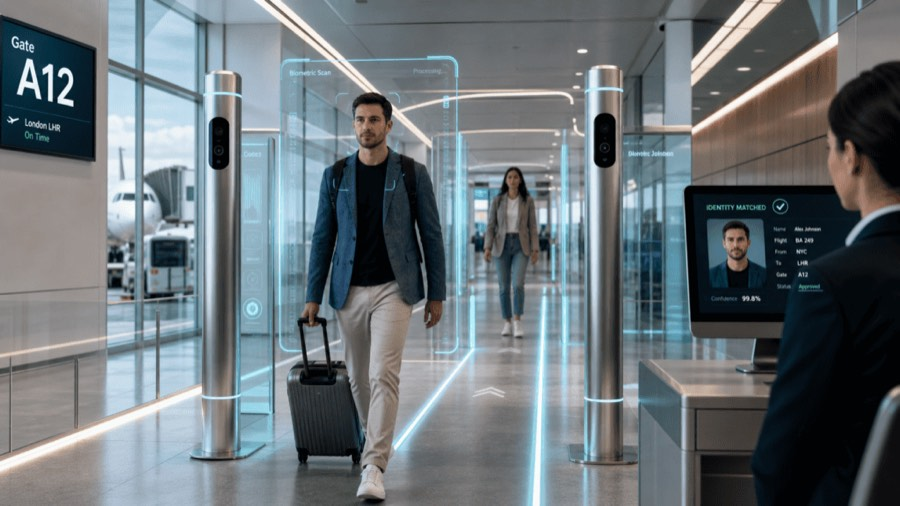
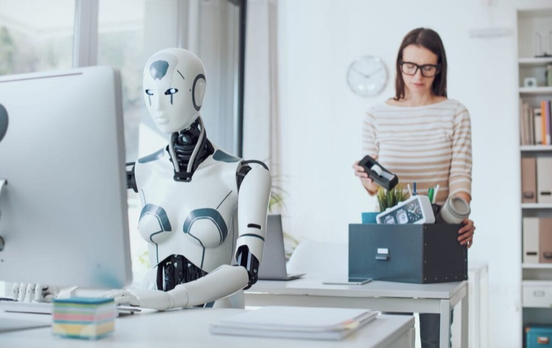
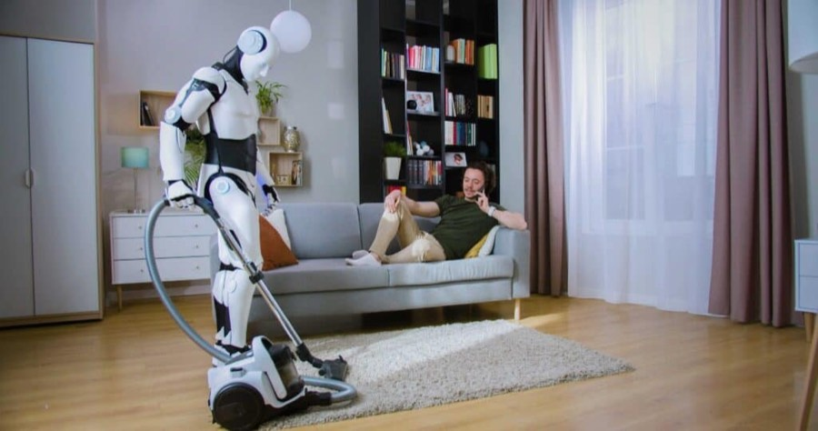
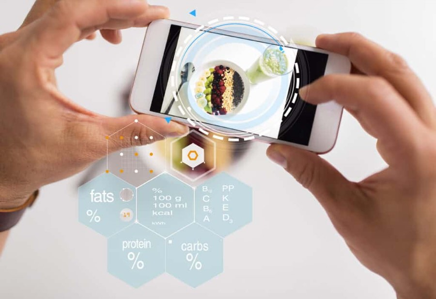

Biometrische technologie rukt op bij luchthavens en grenscontroles, met kortere wachtrijen en betere beveiliging. Zo wordt je lichaam je paspoort.

AI verandert de arbeidsmarkt in een hoog tempo. Welke banen staan onder druk en hoe zorg je dat je als werknemer relevant blijft?

De humanoïde robot staat voor de deur. Wie bouwt ze, wanneer lopen ze in huis rond en wat betekent dat voor de samenleving?
Cyberaanvallen worden sneller, slimmer en steeds vaker geautomatiseerd. Nu AI en quantumcomputers nieuwe dreigingen brengen: houdt onze beveiliging bij?

De tijd van standaard voedingsadvies is voorbij. Startups gebruiken AI, DNA en biometrische data om te bepalen welk eten jouw lichaam nodig heeft.